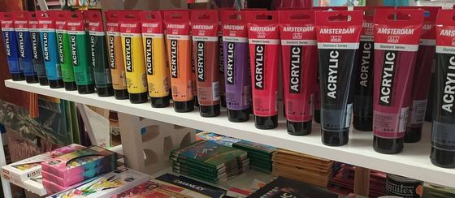
Acrylfarbe
Schnell trocknende Farben in verschiedenen Qualitäten, vom Einstieg bis zum professionellen Einsatz.
Kategorie ansehen →Material für Malerei, Zeichnen, Basteln, Schreibwaren, Büro und dekorative Farben in Icod de los Vinos. Suchen Sie nach Technik oder tippen Sie auf eine Karte; im Laden beraten wir Sie.
Keine Preise und kein Online-Kauf — wir beraten Sie im Laden
Angezeigt: ·

Schnell trocknende Farben in verschiedenen Qualitäten, vom Einstieg bis zum professionellen Einsatz.
Kategorie ansehen →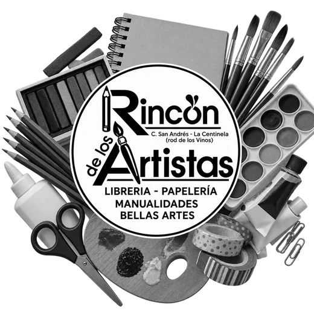
Traditionelle Pigmente und Bindemittel für alle, die Farbtiefe suchen.
Kategorie ansehen →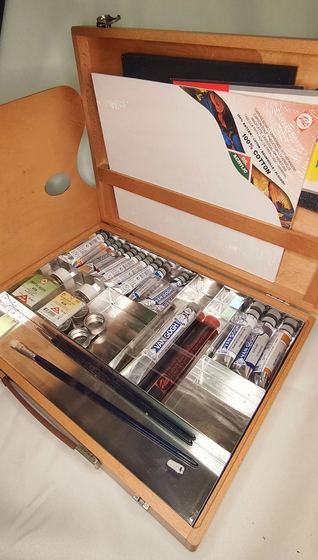
Näpfchen, Tuben und Sets, dazu das passende Papier, um das Beste aus ihnen herauszuholen.
Kategorie ansehen →Deckende, matte Farbe, viel in der Illustration verwendet, in verschiedenen Serien und Formaten.
Kategorie ansehen →Stifte, Kreiden sowie trockene und ölhaltige Pastelle für ausdrucksstarkes Zeichnen.
Kategorie ansehen →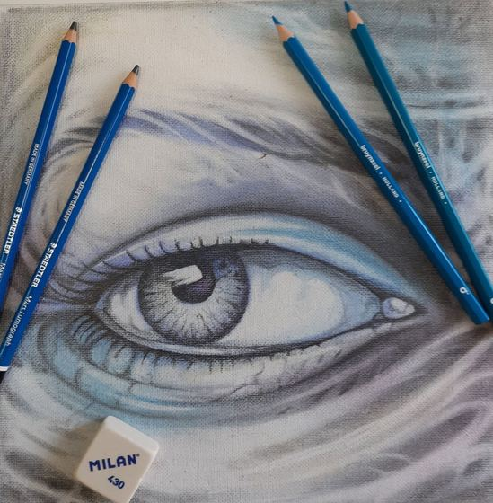
Grafit-, Farb- und technische Stifte in verschiedenen Härtegraden und Marken.
Kategorie ansehen →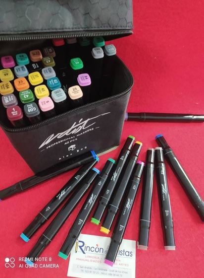
Alkoholbasierte, wasserlösliche Marker und Marker mit Pinselspitze für Illustration und Design.
Kategorie ansehen →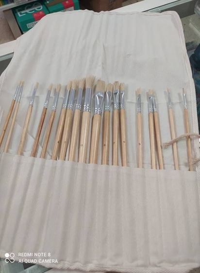
Formen und Härten für jede Technik, dazu Spachtel für Impasto.
Kategorie ansehen →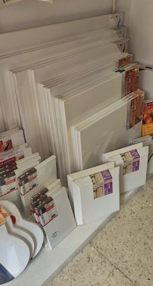
Grundierte Leinwände in verschiedenen Formaten sowie Atelier- und Feldstaffeleien.
Kategorie ansehen →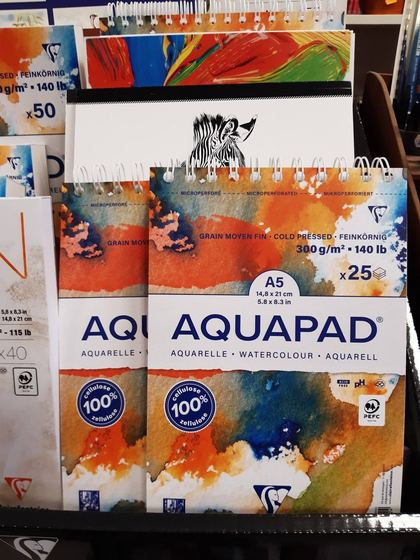
Spezielle Grammaturen und Oberflächen für Aquarell, Grafit, Tusche oder Mixed Media.
Kategorie ansehen →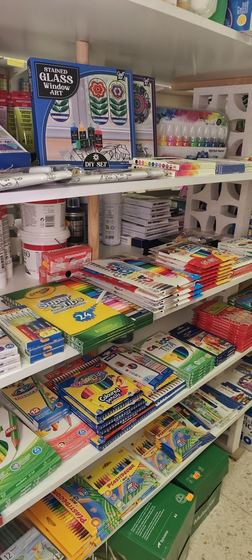
Alles, was Sie für das Schuljahr brauchen, mit der gleichen Liebe zum Detail.
Kategorie ansehen →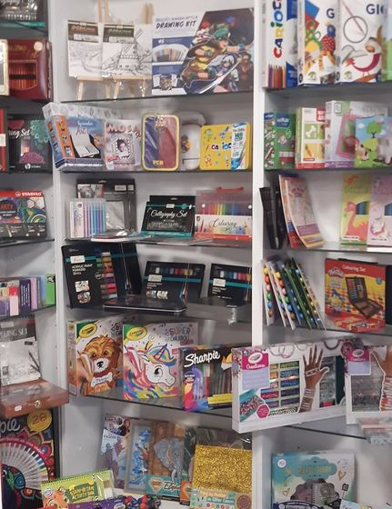
Materialien für Scrapbooking, Dekoration und Familienprojekte.
Kategorie ansehen →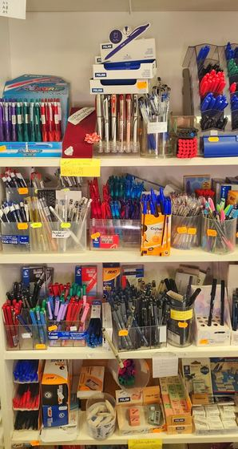
Alltägliche Schreibwaren für Arbeit und Studium: alles, was Sie fürs Büro brauchen.
Kategorie ansehen →Materialien und Dekoelemente, um Ihr Zuhause, Ihr Geschäft oder Ihre Veranstaltungen zu gestalten.
Kategorie ansehen →Farben zum Dekorieren von Wänden, Möbeln und Gegenständen, mit Beratung zu Oberflächen.
Kategorie ansehen →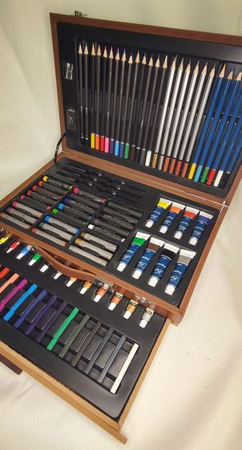
Paletten, Transportkoffer, Schürzen und die kleinen Ateliergrundlagen.
Kategorie ansehen →Diese Kategorie haben wir nicht gefunden — fragen Sie uns im Laden, wir haben sie bestimmt.